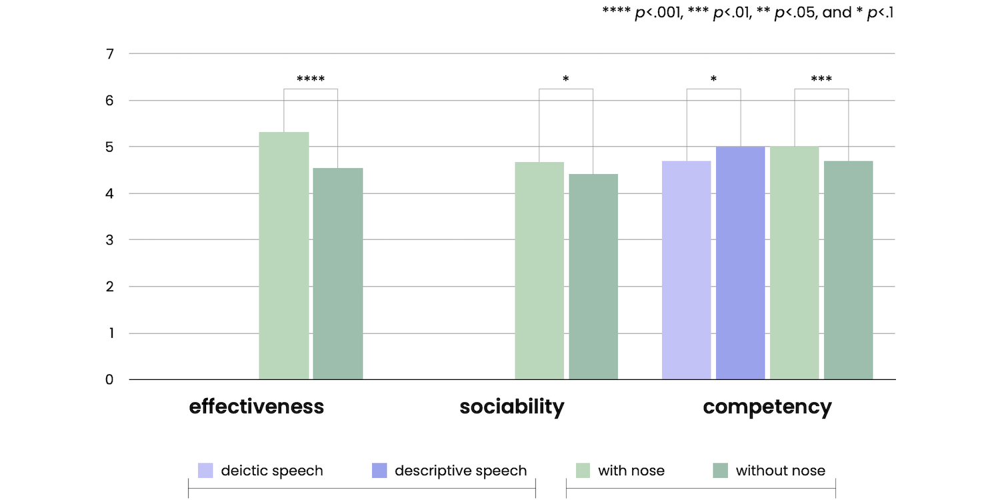
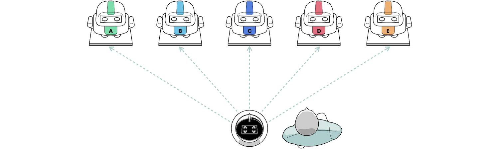
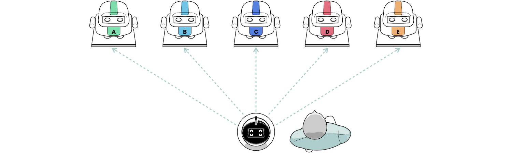
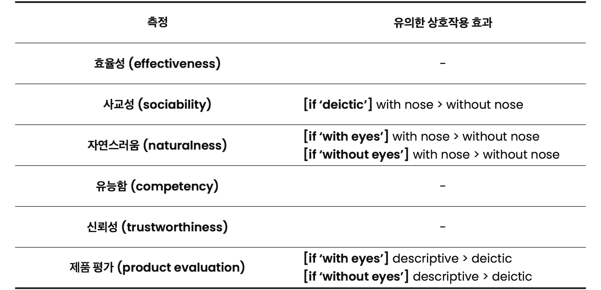

This or That
소셜 로봇의 포인팅 제스처와 발화 방식에 따른 사용자의 인식 연구
Type
Human-Robot Interaction 연구
Affiliation
KIST 지능로봇연구단
Role
인터랙션 리서처
프로젝트 기획, 문헌 조사, 인터랙션 디자인,
제품 디자인, 프로토타입 개발, 사용자 조사, 데이터 분석, 논문 집필
Team
Dr. Dahyun Kang (KIST) 프로젝트 기획, 문헌 조사, 실험 설계, 사용자 조사, 데이터 분석, 논문 집필
Dr. Eun Ho Kim (KITECH) 프로젝트 기획, 실험 설계, 데이터 분석
Dr. Sonya S. Kwak (KIST) 프로젝트 기획, 실험 설계, 사용자 조사, 데이터 분석, 프로젝트 지도
Tools
SolidWorks 3D모델링,
Raspberry Pi 하드웨어,
TurtleBot 로봇플랫폼,
SPSS 데이터분석
Output
제품 프로토타입, 연구 논문
Achievement
IEEE/RSJ IROS 2020 학회 논문
Duration
2019.12 ~ 2020.02 (3개월)
Background
우리는 같은 공간에 있는 사람과 대화할 때 주변의 사물, 장소 등이 자주 토픽이 되고, 제스처나 지시어를 사용해 위치 정보를 공유한다. 로봇 또한, 휴대폰이나 스마트 스피커와 달리 언어적 의사소통뿐만 아니라 비언어적 의사소통을 가능하게 하는 물리적인 형태(physical embodiment)를 가지고 있다.
하지만, HRI 측면에서 로봇의 포인팅 연구는 몇 가지 제한이 있었다.
Locative Deixis
직시어는 대화에서 자주 사용된다. 특히, 위치격 직시어(예시: 이거, 저거)는 주변에 있는 특정 대상을 청자 또는 독자가 이해할 수 있도록 언어를 사용해서 참조할 때 사용된다. 하지만, 로봇은 언어적 의사소통에 있어 대부분 서술적 직시어(예시: 왼쪽에서 두 번째)를 사용한다.
직시어는 위치격 직시어와 서술적 직시어로 나뉠 수 있다.
Pointing Gesture
포인팅 제스처는 유아가 첫 단어를 말하기 전 배우는 의사소통 기술 중 하나다1. 사람들은 복잡한 서술을 생략하기 위해 팔, 머리, 눈, 입술, 코와 같은 다양한 신체 부위를 사용하여 포인팅 제스처를 취한다2. 하지만, 대부분의 로봇 포인팅 제스처에 대한 연구는 손가락으로 가리키는 것으로 제한되었다.
사람은 다양한 신체 부위를 사용하여 포인팅 제스처를 취할 수 있다.
Head Pointing
사람은 머리를 움직여서 특정 대상을 가리키기도 한다. HRI 연구에 따르면 로봇이 머리를 움직여서 가리키는 것은 인간의 행동과 비슷한 효과를 나타낸다3. 사람은 시선과 돌출된 코를 통해 포인팅 제스처를 취할 수 있는 반면에, 소셜 로봇의 머리는 대부분 평면 디스플레이를 사용하기 때문에 정확한 포인팅이 가능한지 알 수 없다.
사람은 시선과 돌출된 코를 통해 포인팅 제스처를 쉽게 취할 수 있다.
Study Design
로봇의 포인팅 관련 발화 및 제스처를 다양한 조건으로 프로토타이핑한 후, 상황에 따라 로봇의 표현에 대한 사용자의 인식을 정량 조사한다.
Independent Varialbes
로봇은 사용자에게 언어뿐만 아니라 포인팅 제스처를 통해 물체의 위치를 알릴 수 있다. 또한, 포인팅 제스처는 시선(eye pointing) 확장이다4. 즉, 시선은 포인팅 제스처의 기본이다.
독립 변수는 언어 2가지, 포인팅 제스처 2가지, 시선 2가지로 설정하였다.
언어
포인팅 제스처
시선
독립 변수: 언어(2가지) X 포인팅 제스처(2가지) X 시선(2가지)
Prototyping
Wizard of Oz 기법 실험을 위한 로봇을 디자인하고 개발하였다.
사용한 소프트웨어
제품 프로토타입
제품 설계 세부 사항
Participants
피험자를 모집하여 연구실 조사(in-lab study)로 실험이 진행되었다.
피험자 설계 세부 사항
혼합 설계 (mixed design)
Experiments
로봇이 사용자와 상호작용하는 상황에 따라, 2가지의 실험을 진행하였다.
Measurments
각 실험 조건에 대해서 아래 4가지를 7점 리커트 척도로 측정하였다.
측정을 통해, 사용자가 각 로봇의 표현 방식에 따라 사용자에게 위치 정보를 얼마나 효과적으로, 사회적으로, 자연스럽게 제공하는지 확인하였다. 또한, 로봇에 대한 전반적인 인상을 알아보기위해 제품 평가를 조사하였다.
진행되었던 실험 중, 전시 안내 상황에서는 로봇의 설명에 대한 인식을 알아보기 위해 아래 2가지를 추가적으로 측정하였다.
질문 아이템


4가지 공통 측정과 2가지 추가 측정에 대한 아이템
Seat Guide
로봇은 피험자를 맞이하고 자리를 안내한다. 피험자는 연구실에 배치된 5개의 의자 중 로봇이 포인팅 하는 의자에 앉도록 요청받았다.
자리 안내 실험 환경
Procedure
피험자는 무작위 순서로 총 4번의 착석 요청을 받았으며, 각 착석 이후에 로봇의 인상을 평가했다. 로봇의 언어 및 제스처 표현 예는 다음과 같다.
Results
실험을 통해 각 조건의 로봇이 사용자의 인식에 미치는 영향을 조사하기 위해 이원 반복측정 분산분석(two-way RM ANOVA)을 수행했다.
사용한 소프트웨어
로봇의 효율성, 사교성, 자연스러움 및 제품 평가 측정에 대해 신뢰도 분석(Cronbach's alpha) 시, 모두 0.6 이상으로 유의한 결과가 나왔다.
신뢰도 분석 결과
각 측정에 대한 신뢰도 분석 후 Cronbach's alpha 계수
Main Effect


측정 항목별 분석
Effectiveness
포인팅 제스처가 효율성에 미치는 주 효과는 유의미했다.
주 효과 데이터
효율성 주 효과: with nose > without nose
Sociability
포인팅 제스처가 사교성에 미치는 주 효과는 유의미했다.
주 효과 데이터
사교성 주 효과: with nose > without nose
Product Evaluation
언어와 포인팅 제스처가 제품 평가에 미치는 주 효과는 유의미했다.
주 효과 데이터
제품 평가 주 효과: descriptive > deictic / with nose > without nose
Accuracy of Location Information Perception
위치 정보 인식의 정확성은 다음과 같다. (피험자가 안내 로봇이 의도한 자리에 앉은 확률)
Exhibition Guide
피험자는 안내 로봇을 통해 로봇 쇼룸에 전시된 로봇에 대한 설명을 듣는다. 안내 로봇은 전시된 5개의 로봇을 하나씩 포인팅 하면서 설명하고, 피험자는 메모지에 안내 로봇이 포인팅 한 순서대로 메모한다.
 

전시 안내 실험 환경
Procedure
피험자는 무작위 순서로 총 4번의 조건을 경험했으며, 각 조건 이후에 로봇의 인상을 평가했다. 로봇의 언어 및 제스처 표현 예는 다음과 같다.

Results
실험을 통해 각 조건의 로봇이 사용자의 인식에 미치는 영향을 조사하기 위해 이원 반복측정 분산분석(two-way RM ANOVA)을 수행했다.
사용한 소프트웨어
로봇의 효율성, 사교성, 자연스러움, 유능함, 신뢰성 및 제품 평가 측정에 대해 신뢰도 분석(Cronbach's alpha) 시, 모두 0.6 이상으로 유의한 결과가 나왔다.
신뢰도 분석 결과

각 측정에 대한 신뢰도 분석 후 Cronbach's alpha 계수
Main Effect


Interaction Effect

측정 항목별 분석
Effectiveness
언어와 포인팅 제스처가 효율성에 미치는 주 효과는 유의미했다.
주 효과 데이터
효율성 주 효과: descriptive > deictic / with nose > without nose
Sociability
언어와 포인팅 제스처가 사교성에 미치는 주 효과는 유의미했다.
주 효과 데이터
사교성 주 효과: descriptive > deictic / with nose > without nose
또한, 언어와 포인팅 제스처가 사교성에 미치는 상호작용 효과가 존재했다.
상호작용 효과 데이터
사교성 상호작용 효과: [deictic] with nose > without nose
로봇에 대해 사용자가 인식하는 사교성을 높이기 위해 지시적 발화(deictic speech) 유형에는 코 포인팅을 적용할 수 있다.
Naturalness
언어와 포인팅 제스처가 자연스러움에 미치는 주 효과는 유의미했다.
주 효과 데이터

자연스러움 주 효과: descriptive > deictic / with nose > without nose
또한, 포인팅 제스처와 시선이 자연스러움에 미치는 상호작용 효과가 존재했다.
상호작용 효과 데이터
자연스러움 상호작용 효과: [with eyes] with nose > without nose / [without eyes] with nose > without nose
로봇에 대해 사용자가 인식하는 자연스러움을 높이기 위해 로봇의 시선 유무와 상관없이 코 포인팅을 적용할 수 있다.
Competency
언어와 포인팅 제스처가 유능함에 미치는 주 효과는 유의미했다.
주 효과 데이터
유능함 주 효과: descriptive > deictic / with nose > without nose
Trustworthiness
언어와 포인팅 제스처가 신뢰성에 미치는 주 효과는 유의미했다.
주 효과 데이터

신뢰성 주 효과: descriptive > deictic / with nose > without nose
Product Evaluation
언어와 포인팅 제스처가 제품 평가에 미치는 주 효과는 유의미했다.
주 효과 데이터
제품 평가 주 효과: descriptive > deictic / with nose > without nose
또한, 언어와 시선이 제품 평가에 미치는 상호작용 효과가 존재했다.
상호작용 효과 데이터
제품 평가 상호작용 효과: [with eyes] descriptive > deictic / [without eyes] descriptive > deictic
로봇에 대해 사용자가 인식하는 제품 평가을 높이기 위해 로봇의 시선 유무와 상관없이 서술적 발화(descriptive speech)를 적용할 수 있다.
Accuracy of Location Information Perception
언어와 포인팅 제스처, 시선이 위치 정보 인식의 정확성에 미치는 주 효과는 유의미했다.
주 효과 데이터
(10문제 기준)
또한, 언어와 포인팅 제스처가 유용성에 미치는 상호작용 효과가 존재했다.
상호작용 효과 데이터
Conclusion
Interpretation of Results
결과에 대한 해석은 다음과 같다.
Implication
본 연구는 다음과 같은 영향을 줄 수 있다.
사용자와 로봇이 기준점이 같은 경우와 다른 경우
Limitation & Futurework
본 연구의 한계점은 다음과 같다.
Publication
References
[1] Pointing: Where Language, Culture, and Cognition Meet (2003) by Sotaro Kita ↩
[2] The Role of Gesture in Communication and Thinking (1999) by Susan Goldin-Meadow in Trends in Cognitive Sciences ↩
[3] We Are Not Contortionists: Coupled Adaptive Learning for Head and Body Orientation Estimation in Surveillance Video (2012) by Cheng Chen and Jean-Marc Odobez in IEEE Conference on Computer Vision and Pattern Recognition ↩
[4] Becoming Human: From Pointing Gestures to Syntax (2011) by Teresa Bejarano ↩
[5] Robot Deictics: How Gesture and Context Shape Referential Communication (2014) by Allison Sauppé and Bilge Mutlu in ACM/IEEE HRI ↩
[6] Rhetorical Robots: Making Robots More Effective Speakers Using Linguistic Cues of Expertise (2013) by Sean Andrist, Erin Spannan and Bilge Mutlu in ACM/IEEE HRI ↩
[7] Adoption of New and Really New Products: The Effects of Self-Regulation Systems and Risk Salience (2007) by Michal Herzenstein, Steven S. Posavac and J. Joško Brakus in Journal of Marketing Research ↩
[8] The Role of Imagination-Focused Visualization on New Product Evaluation (1989) by Min Zhao, Steve Hoeffler and Darren W. Dahl in Journal of Marketing Research ↩